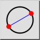

2 Σημεία
Γραμμή εργαλείων / Εικονίδιο:


Μενού: Σχεδίαση > Κύκλος > 2 Σημεία
Συντόμευση: C, 2
Εντολές: circle2p | c2
Πρόκειται για αυτόματη μετάφραση.
Γραμμή εργαλείων / Εικονίδιο:


Σχεδιάζει έναν κύκλο με δύο διαμετρικά αντίθετα σημεία.